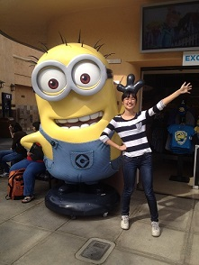

个人日志
关于前端课程
7月1日 2014
简介：我对本课程的期待、对Web前端的理解、以及对老师和助教想说的话
Who am I?

我是：正在前进的道路中的半吊子程序员一名
我爱：体育，美剧，最爱睡觉
我的特征：感性动物！天生的乐天派！
我的外号：铜锅萌萌哒
未来的梦想：睡觉睡到自然醒，或者环游世界
联系我：zhangst110506@gmail.com
个人日志
关于前端课程
7月1日 2014
作为一个即将变成大四狗的人回来学前端，感觉自己萌萌哒！发现和我同甘共苦，出生入死的快要成为大四狗的大帝和大可爱成了我的助教，感觉自己萌萌哒！听说这几天已经有好多个二字班的小朋友以为我是助教，然后却感觉我什么都不会萌萌哒！
查看更多
作为一个即将变成大四狗的人回来学前端，感觉自己萌萌哒！发现和我同甘共苦，出生入死的快要成为大四狗的大帝和大可爱成了我的助教，感觉自己萌萌哒！听说这几天已经有好多个二字班的小朋友以为我是助教，然后却感觉我什么都不会萌萌哒！
去年夏天，错过了和一字班的兄弟姐妹们学习前端的机会，回来之后整个人都不好了，后面由于一直负责的是后台的工作，所以一直没有机会好好系统的学习一下前端的知识，希望能够通过接下来的两周时间好好努力，多向优秀的前端工程师，优秀的作业学习！嘿嘿~顺祝大帝和安琪幸福，顺祝大可爱和洪大神幸福！
经历了软工课，又苦又累，却收获很大，并且发现刘强老师也是萌萌哒！希望以后有机会也能多交流（现在可是班主任了呢^^），二字班的孩子们我也都很熟，下学期他们软工课要是有请客吃饭什么的带上我吧！
返回
Web前端课堂展示区
Homework1
7月1日 2014
个人主页链接地址：http://stzhang.github.io/FrontEnd/HW1/
欢迎批评指正！